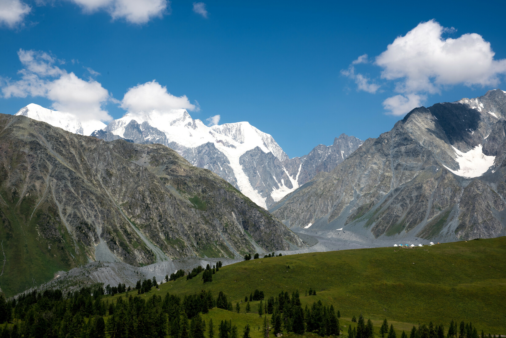

Катонқарағай мемлекеттік ұлттық табиғи паркі
Шығыс Қазақстан облысы Катонқарағай ауданының аумағында 2001 жылы ұйымдастырылған саябақ. Ауданы 643 мың га, оның 215 мың га-сы орманды алқап, ағаштарының қоры – 24 мың м³, қорықтық аймақ жері 151 мың гектар. Саябақтың пайдаланылатын аумағы – 492 мың га. Солтүстігінде Қызылқарағай және Қатын жотасына ұласа отырып, Ресеймен шектеседі. Шығысында Үкек даласымен (Ресей, Алтай Республикасы) және Қытаймен, оңтүстігінде Темірқаба өзенін бойлай Марқакөл қорығымен шектеседі. Климаты тым континеттік. Жылдық жауын-шашынның мөлшері 600-1800 мм аралығында. Саябақтың жері жануарлар мен өсімдіктер түріне бай.